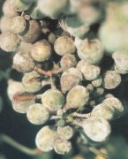

Szőlőlisztharmat
Uncinula necator
Külső élősködő gomba, amely a szőlő minden zöld részét
(levél, fürt, hajtás) megtámadja. A gomba micéliumbevonata a növényi sejtek
fejlődését gátolja, vizet és tápanyagot von el a növénytől. A fertőzött levelek
elszáradnak, a bogyók kicsik maradnak és felrepednek (sérves bogyó). A gomba a
rügypikkelyek között, a vesszők kérge alatt telel. A betegség terjedésének a meleg
idő kedvez. A konídiumok csírázási optimuma 18-25 °C, s ehhez még magas
páratartalomra is szükség van.
Védekezés:
- Preventív védekezés - különösen ott,
ahol előző évben jelentkezett a betegség
az első levelek 4-5 cm-es magasságánál ajánlott.
- A későbbiek során a meleg, csapadékmentes,
de páradús időszakokban szükséges védekezni.
A védekezéshez kéntartalmú pl. Thiovit S
(a szüret előtti 28-35. napig) vagy kénpótló
szerek pl. Karathane FN-57, Topsin-Metil,
Rubigan 12 EC használhatók.
A védekezéshez ajánlott készítmények:
 Báriumpoliszulfid
Báriumpoliszulfid
Ventillált
kénpor
Nedvesíthető
kén (SZERA)
Thiovit
S
Karathane
FN-57
Karathane
LC
Rézkénpor
Rubigan
12 EC
Saprol
Afugan